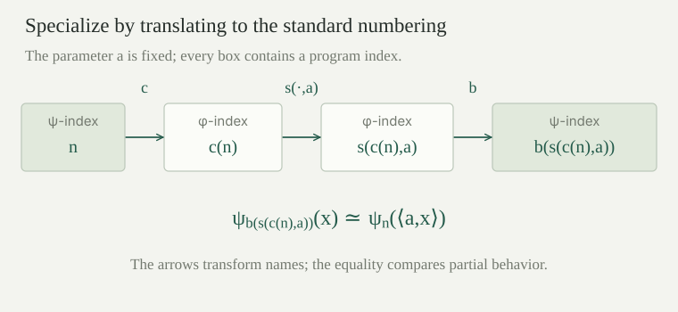

Use the fixed program numbering \(\varphi_e\) and its primitive-recursive specialization function \(s(e,a)\). Write \(U(e,x)\simeq\varphi_e(x)\) for the universal partial evaluator. For a total recursive function \(F(e,a)\) producing program indices, a uniform fixed-point selector is a total recursive function \(h(a)\) such that
The relation \(\simeq\) is equality of partial values, including divergence. The requirement is \(\exists h\,\forall a,x\), with one algorithm computing the chosen index from \(a\). Applying the ordinary fixed-point theorem separately at each \(a\) gives only \(\forall a\,\exists e\). That statement alone does not provide a computable way to choose those indices.
For every total recursive \(F:\mathbb N^2\to\mathbb N\), there is one primitive-recursive \(h:\mathbb N\to\mathbb N\) satisfying
More precisely, one fixed index \(q\) suffices, and the selector is \(h(a)=s(q,a)\).
Decode \(y=\langle a,x\rangle\) and define the binary partial function
Pair decoding and specialization are primitive recursive, \(F\) is total recursive, and the universal evaluator \(U\) is partial recursive. Their strict composition makes \(G\) partial recursive. The index calculation always finishes; the final evaluation may diverge.
Apply the ordinary recursion theorem once, to \(G\). It gives a single \(q\) with \(\varphi_q(y)\simeq G(q,y)\) for every \(y\). Using the explicit self-specialization construction \(d(b)=s(b,b)\), one may take \(q=d(r)\), where one chooses an index \(r\) with \(\varphi_r(\langle b,y\rangle)\simeq G(d(b),y)\). Now put \(h(a)=s(q,a)\). Since \(q\) is fixed and \(s\) is primitive recursive, this whole selector is primitive recursive. For every \(a,x\),
All equalities concern partial values, so both defined outputs and divergence agree. The same \(q\) was chosen before \(a\) varied. This proves the selector assertion, rather than merely a separate existence statement for each parameter.
If \(g(e,a,x)\) is partial recursive jointly in its three arguments, there is one primitive-recursive \(h(a)\) such that \(\varphi_{h(a)}(x)\simeq g(h(a),a,x)\) for every \(a,x\). A specified construction chooses an index \(p\) with \(\varphi_p(\langle e,\langle a,x\rangle\rangle)\simeq g(e,a,x)\), defines \(F(e,a)=s(s(p,e),a)\), and uses the selector from for this \(F\).
Joint partial recursiveness supplies the single paired-input index \(p\). Two applications of specialization give \(\varphi_{F(e,a)}(x)\simeq g(e,a,x)\). The map \(F\) is total primitive recursive, because it transforms indices without running the indexed functions. The parameterized theorem therefore yields \(\varphi_{h(a)}(x)\simeq\varphi_{F(h(a),a)}(x)\simeq g(h(a),a,x)\). No totality assumption on \(g\) is used.
Apply to the total rule \(g(e,a,x)=e+a+x\). Show that the selector can be primitive recursive and injective. Explain why this does not assert that \(h(a)=F(h(a),a)\) numerically.
The specified compiler for this \(g\) is total primitive recursive. Thus the construction gives a primitive-recursive \(h\) with \(\varphi_{h(a)}(x)\downarrow=h(a)+a+x\) for every \(a,x\). Every selected program is total. If \(h(a)=h(b)=j\), evaluating the same program at \(0\) gives both \(j+a\) and \(j+b\). A partial function has only one output at a given input, so cancellation gives \(a=b\). Hence this particular selector is injective.
The fixed-point assertion compares the functions computed by two indices. It need not make the index numbers equal. For example, \(F(e,a)=e+1\) is a total recursive index transformation for which numerical equality would be impossible, while still supplies semantic fixed points simultaneously for all parameters.
A numbering \(\psi=(\psi_n)_{n\in\mathbb N}\) of the unary partial recursive functions is a sequence of such functions containing every one of them. Repetitions are allowed. It is a computable numbering if the joint partial evaluation \(\Psi(n,x)\simeq\psi_n(x)\) is partial recursive.
The standard \(\varphi\) is a computable numbering by . A numbering's surjectivity is an existence assertion about program names. It does not itself supply an algorithm translating a name from another numbering.
If \(\Psi(n,x)\simeq\psi_n(x)\) is partial recursive jointly, choose one index \(p\) with \(\varphi_p(\langle n,x\rangle)\simeq\psi_n(x)\). Then the specified primitive-recursive compiler \(c(n)=s(p,n)\) satisfies \(\varphi_{c(n)}(x)\simeq\psi_n(x)\) for every \(n,x\).
The universal enumeration supplies \(p\) for the unary function of the pair code. Specialization gives \(\varphi_{s(p,n)}(x)\simeq\varphi_p(\langle n,x\rangle)\simeq\psi_n(x)\). The index \(p\) is fixed before \(n\) varies, so \(c\) is primitive recursive. This direction needs no assumption that \(\psi\) contains all partial recursive functions.
A numbering \(\psi\) is acceptable when there are total recursive compilers \(c,b:\mathbb N\to\mathbb N\) satisfying
Thus \(c\) sends a \(\psi\)-index to a standard index, while \(b\) sends a standard index to a \(\psi\)-index. These are translations of behavior; neither compiler is required to be injective or to be the numerical inverse of the other. For instance, the identities imply \(\psi_{b(c(n))}\simeq\psi_n\), but not necessarily \(b(c(n))=n\).
For an acceptable numbering with supplied compilers \(c,b\), the evaluator \(\Psi(n,x)\simeq\psi_n(x)\) is partial recursive jointly. The specified total recursive specialization function
satisfies \(\psi_{s_\psi(n,a)}(x)\simeq\psi_n(\langle a,x\rangle)\) for every \(n,a,x\).
Joint evaluation is \(U(c(n),x)\), a partial recursive composition with the total compiler \(c\). For specialization, first compile the original \(\psi\)-index into a standard index, insert \(a\) using the standard \(s\), and compile back with \(b\). These index operations all terminate. The behavioral calculation is
The compiler orientation matters: \(s\) receives a standard index, not the untranslated \(\psi\)-index. The calculation includes divergence, and gives the claimed specialization for this same numbering.

Let \(\psi\) be acceptable with supplied compilers \(c,b\), and let \(F(e,a)\) be total recursive, now returning \(\psi\)-indices from \(\psi\)-indices and parameters. There is one total recursive \(H(a)\) such that
Define a transformation of standard indices by \(\widehat F(e,a)=c(F(b(e),a))\). Its input \(e\) is first translated by \(b\), so \(F\) receives a \(\psi\)-index; the resulting \(\psi\)-index is translated back by \(c\). The composite is total recursive. Apply to obtain a single primitive-recursive standard selector \(h\) for \(\widehat F\), and set \(H(a)=b(h(a))\). This \(H\) is total recursive.
Every translation has been used in its stated direction. No numerical equality between translated indices was needed. Because \(b\) was assumed total recursive rather than primitive recursive, this argument claims a total recursive selector in the new numbering.
Define \(\psi_{\langle u,v\rangle}(x)\simeq\varphi_v(x)\). Find two effective compilers showing that this is an acceptable numbering, and test whether the two composites are numerical identities.
Take \(c(n)=\operatorname{right}(n)\) and \(b(e)=\langle0,e\rangle\). Both are primitive recursive, and the defining equations give \(\varphi_{c(n)}\simeq\psi_n\) and \(\psi_{b(e)}\simeq\varphi_e\). In particular every standard program appears, and joint evaluation is \(U(\operatorname{right}(n),x)\).
The composite \(c(b(e))=e\) is the identity. In the other direction, \(b(c(\langle u,v\rangle))=\langle0,v\rangle\), which differs from \(\langle u,v\rangle\) whenever \(u\ne0\), by injectivity of the pairing. The two indices still compute the same partial function. These explicit computable translations establish acceptability; a bare bijection between sets of names would not supply the required algorithms.
The set \(H_0=\{e:\varphi_e(0)\downarrow\}\) is undecidable. More precisely, there is a primitive-recursive \(t(e)\) such that \(\varphi_{t(e)}(z)\simeq\varphi_e(e)\) for every \(e,z\), so \(e\in K\) if and only if \(t(e)\in H_0\).
The binary partial function \((e,z)\mapsto U(e,e)\), ignoring \(z\), is partial recursive. Choose one index \(p\) satisfying \(\varphi_p(\langle e,z\rangle)\simeq U(e,e)\), and put \(t(e)=s(p,e)\). Specialization proves the claimed equality at every \(z\). A total recursive decision test for \(H_0\), composed with the primitive-recursive \(t\), would decide the undecidable diagonal halting set \(K\). Thus no such test exists.
For \(n=\langle u,v\rangle\), define a partial function \(\theta_n\) by
Subtraction is ordinary natural subtraction; it is used only in the case \(u>0\). The positive-input branch uses the same input \(x\), without shifting it. Consequently
This is a decidable property of the index. The next result shows why that convenience obstructs an effective translation of arbitrary standard indices.
The family \(\theta\) is a computable numbering of all unary partial recursive functions, and it has a primitive-recursive compiler into \(\varphi\). There is no total recursive \(b\) with \(\theta_{b(e)}\simeq\varphi_e\) for every \(e\); hence this numbering is not acceptable.
To evaluate \(\theta_n(x)\), decode \(n=\langle u,v\rangle\) and test whether \(x=0\). At positive inputs run \(U(v,x)\). At zero, return \(u-1\) when \(u>0\); otherwise search for a natural number satisfying \(0=1\), which never succeeds. Total tests and these partial branches give a jointly partial recursive evaluator. therefore supplies the specified form of a primitive-recursive compiler into the standard numbering.
For surjectivity, let \(f\simeq\varphi_v\) be any unary partial recursive function. If \(f(0)\) is undefined, choose \(u=0\); if \(f(0)\downarrow=y\), choose \(u=y+1\). Then \(\theta_{\langle u,v\rangle}\simeq f\): the zero-input behaviors agree by the choice of \(u\), and every positive-input behavior agrees by the definition. This is an existence proof, not an effective test selecting between the two cases.
Suppose the reverse compiler \(b\) existed. Its total computable output could be decoded, and the decidable test \(\operatorname{left}(b(e))>0\) would determine whether \(\theta_{b(e)}(0)\) halts. The compiler identity would make that exactly a decision test for \(\varphi_e(0)\downarrow\), contrary to . Thus the reverse compiler cannot exist, even though the listing is computable and includes every required function.
For the numbering \(\theta\), “halts at input zero” is a property of the computed partial function, and its index set is decidable. Why does this not contradict Rice’s theorem?
The property is genuinely nontrivial: \(\theta_{\langle0,0\rangle}(0)\) is undefined, whereas \(\theta_{\langle1,0\rangle}(0)\downarrow=0\). Nevertheless its \(\theta\)-index set is exactly the decidable set of names whose first coordinate is positive.
The earlier Rice theorem concerns the fixed standard numbering, with its universal evaluation and effective index constructions. Those conclusions cannot be transferred using surjectivity of a list alone. If a computable compiler from standard indices into \(\theta\)-indices existed, the zero-input flag would decide standard halting at zero, precisely the contradiction already proved. The example therefore shows why the effective translation requirement matters.